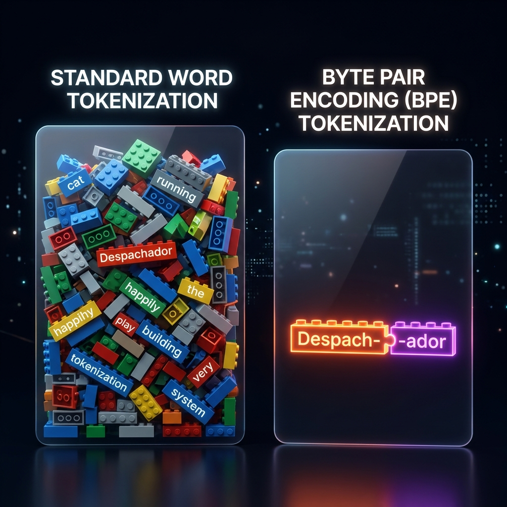

IA Generativa & Arquitectura RAG
Sesión 2: Cómo estructurar propuestas estratégicas de Inteligencia Artificial Generativa y entender la arquitectura RAG basada en datos privados.
Next-Token & Tokens
Desmitificamos el 'hype' y analizamos el costo de APIs, caching y Lost in the Middle.
Embeddings & Vectores
El GPS de las ideas, cosine similarity, filtrado de metadatos y fragmentación con overlap.
Mock PRD Cargill
Especificamos en un documento formal los requisitos, datos e indicadores de aceptación de la IA.
Evals & QA
Evitamos alucinaciones con umbrales, Golden Datasets y roleplay para entrevistas IT.
Desmitificando los LLMs
Separando la ficción mediática de la realidad científica y probabilística de las APIs.
El Mito: "Cerebro Mágico"
La Realidad: Next-Token Prediction
¿Qué es el Fine-Tuning (Ajuste Fino)?
Es el proceso de entrenar a un modelo existente con datos adicionales para enseñarle un estilo, comportamiento o formato de salida específico (ej: hablar como un despachante portuario ultra-formal de Cargill o dar respuestas estructuradas en JSON).
Regla de Oro: El Fine-Tuning no inyecta conocimiento factual dinámico (el modelo seguirá alucinando si le preguntás por datos privados que no vio). Para inyectar información de tu negocio de forma exacta, usaremos la arquitectura RAG (Retrieval-Augmented Generation).
Tokens: La Economía de la IA
Los modelos de lenguaje no procesan palabras completas. Conocé cómo impacta la segmentación semántica en tus costos.
La Unidad de Facturación
Aproximadamente 1000 tokens equivalen a 750 palabras. Las APIs cobran tarifas asimétricas: los tokens de entrada (Input Context) son mucho más baratos que los tokens generados por el modelo (Output Generation).

Prompt Caching
Una optimización a nivel de arquitectura backend. Almacena en caché los prompts extensos del sistema que no cambian (ej. las directrices y manuales base), reduciendo costos de facturación de entrada hasta un 50% y acelerando las respuestas.
Ventanas de Contexto & Sesgo de Atención
Las limitaciones de memoria en prompts masivos y cómo los LLMs pierden la atención en el centro geométrico del contexto.
Ventana de Contexto (Límite Físico)
Define la memoria a corto plazo del modelo. Aunque las ventanas modernas son masivas, el rendimiento de la IA se degrada drásticamente cuanto más grande es el contexto inyectado en una sola llamada de API.

El Fenómeno "Lost in the Middle"
Los LLMs recuerdan de forma sobresaliente (99% de precisión) la información ubicada al inicio y al final de la ventana de contexto, pero sufren una pérdida de retención del 40% en los datos del medio.
Embeddings: Traducción Semántica
La clave geométrica para que las computadoras entiendan el significado conceptual y las asociaciones del lenguaje natural.
Text Input
Se ingresa una frase o párrafo: "Liberar despacho de granos en Rosario".
Embedding Model
El modelo traduce el texto en una lista de coordenadas matemáticas (1536 números).
Mapa de Ideas
Las ideas similares se ubican geométricamente cerca en el espacio de alta dimensión.
Radar Semántico 3D

Cercanía por Coseno: El modelo mapea conceptos en 1536 dimensiones. Términos afines de logística fluvial ("Barcaza", "Remolcador") quedan con un score de similitud de 0.89, mientras "Deportivo" queda aislado en 0.12.
Bases Vectoriales & Metadata Filtering
La memoria a largo plazo persistente de la IA y cómo acelerar búsquedas reduciendo ruido mediante filtros semánticos.
Persistencia Semántica
Las bases de datos vectoriales (Pinecone, PGVector) guardan millones de embeddings y permiten realizar búsquedas semánticas (similitud de coseno) en milisegundos.
Metadata Filtering
Pre-filtrar los datos vectoriales por metadatos estructurados (puerto, año, despachante) para limitar la búsqueda semántica y optimizar la precisión de recuperación.
Ejecutando búsqueda semántica optimizada filtrando en: [Puerto: Rosario]
Chunking: Estrategias de Fragmentación
Cómo cortar documentos extensos sin quebrar el sentido gramatical y la importancia del solapamiento.
Estrategias de Segmentación
Dividir PDFs complejos (como un reglamento aduanero) en trozos discretos de 1000 caracteres. Si el corte ocurre en la mitad de una regla de tarifas, la información se vuelve inútil.
Overlap (Solapamiento)
Duplicar el 10% del texto del final de un fragmento A al inicio del fragmento B para actuar como un "puente" semántico.
Anatomía de RAG: Fase 1 (Ingestión)
La etapa Batch de procesamiento y almacenamiento offline del conocimiento privado del negocio.
Se recopilan los documentos oficiales y privados que regulan el negocio (ej. PDFs de aduanas, normativas portuarias, reglamentos internos de Cargill). Estos archivos actúan como la fuente única de verdad (Ground Truth).
Anatomía de RAG: Fase 2 (Consulta)
Cómo el sistema RAG orquesta en tiempo real la búsqueda semántica para alimentar al LLM con evidencia física.
El usuario realiza una pregunta sobre el negocio, por ejemplo: "¿Qué documentación de aduana se requiere para habilitar una barcaza en el puerto de Rosario?".
Taller: El Mock PRD (Cargill AI)
Construcción práctica de las especificaciones y del backlog del "Cargill Customs Bot".
Asistente RAG que asiste a los analistas comerciales y despachantes de Cargill a verificar normativas portuarias antes de movilizar mercadería.
Reglas e indicadores de aceptación técnica del bot.
Gobernanza de IA & Data Leakage
Cómo asegurar que la información corporativa sensible no sea filtrada y se procese bajo estándares estrictos.
Uso Obligatorio de Enterprise SLAs
Las políticas de seguridad exigen consumir modelos bajo contratos corporativos especiales (ej. Azure OpenAI o APIs Enterprise con retención de datos en cero). Esto garantiza que el prompt introducido no sea retenido, analizado, ni utilizado para re-entrenar modelos públicos comerciales.
Mitigación de Alucinaciones: Umbrales
El control lógico de confianza semántica para obligar al bot a abstenerse si no dispone de registros.
Confidence Thresholds
Cada búsqueda semántica en la base de datos vectorial devuelve una puntuación de similitud semántica. Como PMs, calibraremos un umbral estricto (ej. 0.75).
Flujo de Decisión Lógica
Así es la compuerta de seguridad lógica que protege el sistema:
Envia al LLM
Bloquea y Rechaza
Evaluación de Calidad: Golden Dataset
Cómo estructurar auditorías cuantitativas sistemáticas sobre software probabilístico de IA.
Golden Dataset
Un conjunto curado de 50 a 100 preguntas típicas asociadas a respuestas perfectas certificadas por expertos del dominio, utilizado como benchmark del producto.
Evals en CI/CD
Ante cada cambio de prompt o base de datos, corremos el Golden Dataset en el pipeline de CI/CD para medir estadísticas de fidelidad al contexto (Context Adherence) de forma objetiva.
Observabilidad Activa
Monitoreo continuo de latencia, costo en dólares de tokens y desvíos semánticos en producción mediante herramientas especializadas como Langfuse o Arize.
Roleplay: Defensa Técnica de IA
Entrena tu discurso estratégico para entrevistas técnicas con reclutadores de IT y líderes de ingeniería.
¿Por qué no realizar Fine-Tuning para alimentar al modelo con nuestras normativas portuarias?
Respuesta Estrella: "El Fine-Tuning no es adecuado para inyectar conocimientos fácticos cambiantes, ya que el modelo sigue alucinando de memoria estática. El Fine-Tuning se utiliza para ajustar estilo, tono o formatos de salida estructurados. Para garantizar precisión absoluta y actualización en tiempo real, la propuesta correcta consiste en implementar una arquitectura RAG combinada con una base de datos vectorial."
¿Cómo mitigan los costos de API si el volumen de usuarios escala linealmente?
Respuesta Estrella: "Implementamos tres estrategias de optimización: 1) Prompt Caching para reducir la facturación de entrada de reglas fijas; 2) Caché Semántica a nivel de backend para responder consultas repetidas frecuentes sin llamar al LLM; y 3) Políticas estrictas de Rate Limits por perfil de usuario corporativo."
Tu Ruta y Valor como IT Product/Project Manager
Consolida tu perfil técnico diferenciando tu alcance de RAG actual y el roadmap de automatización que vendrá.
El Súper-Poder del IT PM en IA
Comprender RAG y tokens no es para programar; es para liderar proyectos con viabilidad real y tomar decisiones estratégicas:
Diferenciación del Roadmap Técnico
Diferencia claramente el alcance de cada fase del programa para tus entrevistas estratégicas:
La Consigna Semanal (Mock PRD)
Completa la plantilla del Mock PRD del "Cargill Customs Bot" especificando los parámetros de chunking, overlap, umbral de confianza y Enterprise SLA. Este documento será tu actividad semanal.